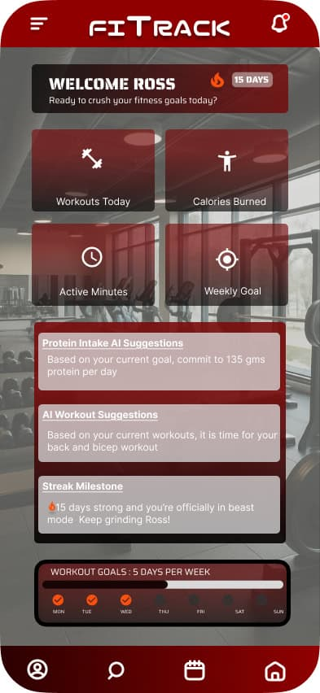
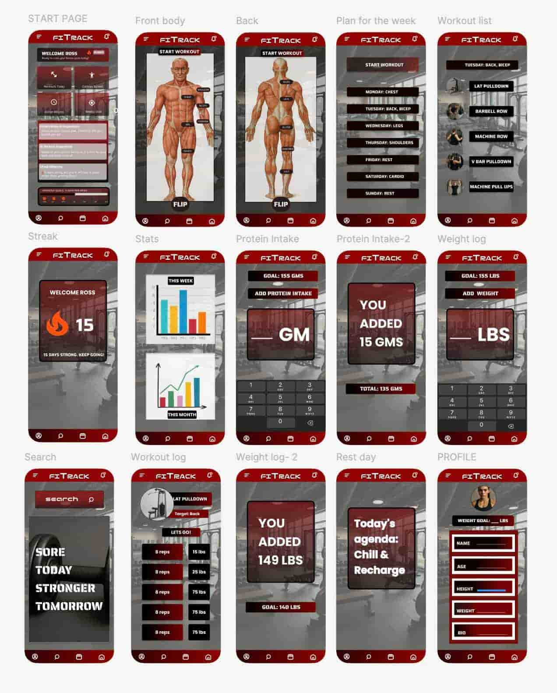

FitTrack
An AI-powered fitness companion that unifies workout tracking, nutrition monitoring, and progress coaching in one intuitive platform.

Project Overview
FitTrack is a mobile app designed to help users optimize their fitness journey — all in one intuitive platform. It tracks workouts, protein intake, and weight progress, enhanced with artificial intelligence to deliver truly personalized coaching, smarter nutrition tracking, and adaptive progress monitoring.
The Problem
Generic, one-size-fits-all fitness plans lead to low motivation, poor engagement, and difficulty integrating fitness, nutrition, and health data across multiple apps.
The Goal
Optimize and track the user’s fitness journey while monitoring daily protein intake and weight progress through a single, AI-powered experience.
The Audience
Fitness enthusiasts and beginners alike — anyone who wants personalized guidance without juggling multiple disconnected apps.
UX Design Roles & Deliverables
- UX designer from concept to delivery
- Wireframing — paper and digital
- Low- and high-fidelity prototyping
- Conducting usability studies
- Accounting for accessibility
- Iterating designs based on user feedback
User Research Summary
User research revealed that fitness enthusiasts and beginners alike are highly motivated by tangible results and mental health benefits, but they often struggle with fragmented experiences across multiple apps, tedious manual entry, and generic, non-personalized plans.
Many users find it inconvenient to track workouts, nutrition, and weight separately, leading to inconsistent logging and eventual disengagement. They also report difficulty interpreting fitness metrics and understanding what actions to take based on their data.
These pain points highlight the need for an integrated, AI-powered solution that automates tracking, delivers personalized insights, and keeps users engaged and accountable.
Key Pain Points
Low Motivation
Users lose consistency due to a lack of personalized encouragement and visible progress indicators.
Fragmentation
Tracking workouts, nutrition, and weight separately across different apps is inconvenient and demotivating.
Lack of Personalization
Generic plans and unclear fitness metrics make it difficult for users to know what actions to take.
Design Process
- Paper wireframes — rapid ideation and layout exploration
- Digital wireframes — refined structure in Figma
- Low-fidelity prototype — core user flows without visual polish
- Usability study round 1 — moderated, in-person
- High-fidelity prototype — full visual design and interactions
- Usability study round 2 — unmoderated, in-person
- Accessibility review and final iteration

Outcomes & Reflections
The final prototype demonstrates a unified fitness experience with AI-driven personalization at its core. Users responded positively to the consolidated dashboard and the clear, actionable feedback loops the app provides.
“Making healthy living simpler, more motivating, and more effective through thoughtful, personalized design.”
What I Learned
Building FitTrack deepened my understanding of how to design for motivation — not just usability. I learned to balance feature richness with simplicity, and how AI features should feel helpful rather than intrusive. Iterating through two rounds of usability studies reinforced the value of putting designs in front of real users early and often.